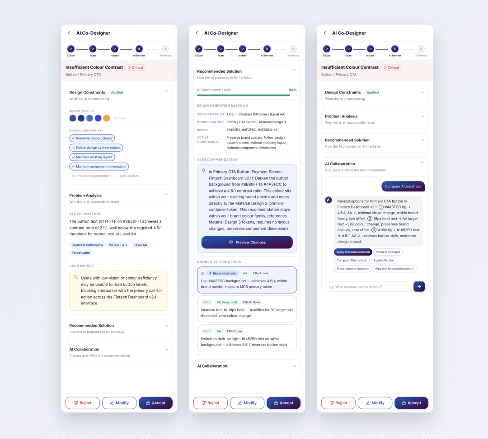

Human-AI Co-Designer for Accessible Interactive Systems
Design and evaluation of an AI-powered Figma plugin to support designers in building inclusive interfaces
Explore the project
The Human–AI Co-Designer Figma plugin developed as part of the MSc dissertation.
From identifying failures to supporting design decisions
Accessibility tools in Figma can identify problems, but diagnostic feedback alone may not explain why an issue matters, who may be affected, or how to address it within existing brand and design-system constraints. This project investigated how an AI-supported design tool could help designers interpret accessibility issues and make informed decisions, rather than leaving them to translate compliance findings into solutions unaided.
An AI-supported Figma co-designer
The student developed a Figma plugin that analyses the designer's current selection and provides contextual accessibility guidance. It combines a rule engine with retrieval to ground recommendations in the Web Content Accessibility Guidelines (WCAG), and uses a live Gemini model call to generate explanations and support dialogue. The plugin was implemented using TypeScript and a JavaScript backend. Its role is to support designers' judgement, not replace it.
Research, design, prototype, evaluate
The project used a competitive audit and contextual interviews to examine existing accessibility-design workflows. Ideation and prototyping informed the development of the plugin, followed by usability testing with practising designers.
- ResearchCompetitive audit and contextual interviews
- DesignIdeation around actionable accessibility guidance
- PrototypeImplementation of the Figma plugin
- EvaluateUsability testing with practising designers
Promising results, with important limitations
Usability testing with eight practising designers found good-to-excellent perceived usability for most participants, alongside high ratings for usefulness, trust and explanation clarity. The evaluation also identified an implementation defect and a consistent desire among participants to verify AI recommendations. These findings underline the importance of transparent guidance and retaining human oversight in AI-supported design.
Accessible AI assistance is not only about generating recommendations. Designers also need to understand and verify them.
Combining AI development with human-centred design
This is a student project case study. Findings reflect a small usability evaluation and should not be interpreted as evidence of deployment or generalised effectiveness.
Explore the MSc Human–AI Interaction course